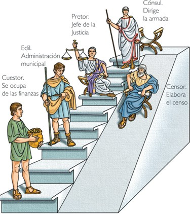

Tipos de Magistraturas
El Senado que decidía sobre la paz y la guerra, nombraba a los jefes militares, recibía embajadores
extranjeros, controlaba los bienes del Estado y aprobaba obras públicas. En caso de extremo peligro, podía elegir a un dictador, que
gobernaba durante 6 meses con poderes absolutos.

Las asambleas eran tres:
La de las Curias, que se ocupaban de temas religiosos.
La de las centurias que elegía:
♦ Cónsules: Ellos eran los jefes politicos y militares su cargo duraba 1 año
♦ Pretores: Eran los que administraban justicia y el cargo duraba 1 año
♦ Censores: Ellos controlaban la moral de los ciudadanos y registraban su fortuna para determinar quienes podian ocupar los cargos publicos.
Su cargo duraba 18 meses.
La Asamblea de la plebe que representaban a los plebeyos y defendían los derechos del pueblo ante el Senado y los cónsules, que eligía a los:
♦ Ediles: Eran los responsables de la limpieza, el abastecimiento de agua y viveres, y los entretenimientos. El cargo duraba 1 año.
♦ Cuestores: Supervisaban el cobro de impuestos y los gatos del gobierno.
Sus decisiones, que al principio sólo alcanzaban a los plebeyos, tuvieron finalmente fuerza
de ley para todos los romanos.